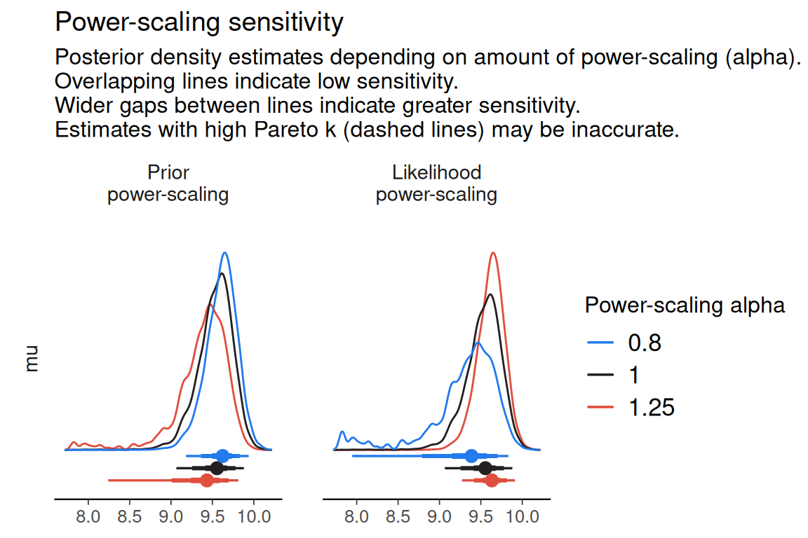

Power-scaling sensitivity analysis
powerscaling.RmdIntroduction
priorsense is a package for prior diagnostics in Bayesian models. It currently implements power-scaling sensitivity analysis but may be extended in the future to include other diagnostics.
Power-scaling sensitivity analysis
Power-scaling sensitivity analysis tries to determine how small changes to the prior or likelihood affect the posterior. This is done by power-scaling the prior or likelihood by raising it to some \(\alpha > 0\).
- For prior power-scaling: \(p(\theta \mid y) \propto p(\theta)^\alpha p(y \mid \theta)\)
- For likelihood power-scaling: \(p(\theta \mid y) \propto p(\theta) p(y \mid \theta)^\alpha\)
In priorsense, this is done in a computationally efficient manner using Pareto-smoothed importance sampling (and optionally importance weighted moment matching) to estimate properties of these perturbed posteriors. Sensitivity can then be quantified by considering how much the perturbed posteriors differ from the base posterior.
Example power-scaling sensitivity analysis
Consider the following model (available via
example_powerscale_model("univariate_normal"):
\[y \sim \text{normal}(\mu, \sigma)\] \[\mu \sim \text{normal}(0, 1)\] \[\sigma \sim \text{normal}^+(0, 2.5)\]
We have 100 data points for \(y\) We first fit the model using Stan:
data {
int<lower=1> N;
real y[N];
}
parameters {
real mu;
real<lower=0> sigma;
}
model {
// priors
target += normal_lpdf(mu | 0, 1);
target += normal_lpdf(sigma | 0, 2.5);
// likelihood
target += normal_lpdf(y | mu, sigma);
}
generated quantities {
vector[N] log_lik;
// likelihood
real lprior;
// joint prior
for (n in 1:N) log_lik[n] = normal_lpdf(y[n] | mu, sigma);
lprior = normal_lpdf(mu | 0, 1) + normal_lpdf(sigma | 0, 2.5);
}
normal_model <- example_powerscale_model("univariate_normal")
fit <- stan(
model_code = normal_model$model_code,
data = normal_model$data,
refresh = FALSE,
seed = 123
)Next, we check the sensitivity of the prior and likelihood to power-scaling. The sensitivity values shown below are an indication of how much the posterior changes with respect to power-scaling. Larger values indicate more sensitivity. By default these values are derived from the gradient of the Cumulative Jensen-Shannon distance between the base posterior and posteriors resulting from power-scaling.
powerscale_sensitivity(fit, variable = c("mu", "sigma"))
#> Loading required namespace: testthat
#> Sensitivity based on cjs_dist:
#> # A tibble: 2 × 4
#> variable prior likelihood diagnosis
#> <chr> <dbl> <dbl> <chr>
#> 1 mu 0.433 0.641 prior-data conflict
#> 2 sigma 0.358 0.671 prior-data conflictHere, we see that the pattern of sensitivity indicates that there is prior-data conflict for \(\mu\). We follow up with visualisation.
We first create a powerscaled_sequence object, which
contains estimates of posteriors for a range of power-scaling
amounts.
There are three plots currently available:
- Kernel density estimates:
powerscale_plot_dens(fit, variable = "mu")
- Empirical cumulative distribution functions:
powerscale_plot_ecdf(fit, variable = "mu")
- Quantities:
powerscale_plot_quantities(fit, variable = "mu")
As can be seen in the plots, power-scaling the prior and likelihood have opposite direction effects on the posterior. This is further evidence of prior-data conflict.
Indeed, if we inspect the raw data, we see that the prior on \(\mu\), \(\text{normal}(0, 1)\) does not match well with the mean of the data, whereas the prior on \(\sigma\), \(\text{normal}^+(0, 2.5)\) is reasonable:
mean(normal_model$data$y)
#> [1] 9.844
sd(normal_model$data$y)
#> [1] 0.7697835